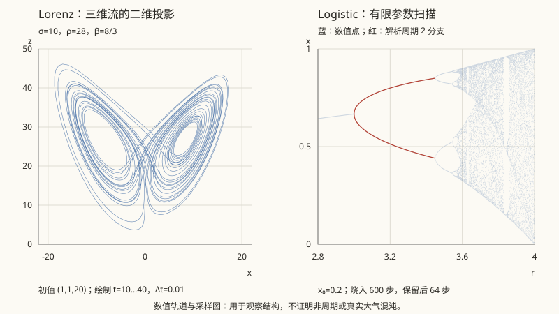

本页目录
非线性 · 混沌与奇怪吸引子
对标：Strogatz《Nonlinear Dynamics and Chaos》/ Ott / Guckenheimer & Holmes ｜ 前置：mech-03（相空间）、fl-04 1963 年 Lorenz 把对流方程截成三个模，发现了确定性系统中的实际不可预测性。本页先用 Logistic 映射做一项 prediction-first 实验，再把有限时间诊断放回 Lorenz、Feigenbaum 普适性和 KAM 的适用语境中：决定论、混沌和不可预测不是同一个词。

学习层：先预测，再打开 Logistic 映射
1. 固定模型与三问预测门
实验只使用一个确定的离散映射：
这是精确递推规则，没有随机噪声。因为 \(f_r([0,1])\subseteq[0,1]\)，两条轨道的距离
有一个硬上限。局部线性化只在 \(D_n\) 仍然很小时可信：
打开实验前，请先回答三件事：
- 规则完全确定，是否因此保证长期可预测？
- 邻轨的指数分离能否无限持续？
- 混沌参数区间是否没有周期窗口？
交互版会在提交三项预测后才显示预设、参数、时间序列、邻轨分离和
揭示后可以连续调 \(r,x_0,\delta_0\)、烧入步数和有限窗 \(N\)；切换预设会保留揭示状态，重置才会重新关门。
无 JavaScript 时的静态读法：固定 \(\delta_0=10^{-8}\)。表中的“有限窗诊断”只描述给定初值、烧入和采样长度的计算，不能把一张非周期图当作定理。
| 预设 | \(r\) | \(x_0\) | 烧入后读法 | \(\lambda_N\) 应如何解释 |
|---|---|---|---|---|
| 稳定不动点 | 2.8 | 0.2 | \(x_n\to x_*=(r-1)/r=5/7\) | 长窗趋向 (\log |
| 稳定周期 2 | 3.2 | 0.2 | 两个值交替；固定点已失稳 | 周期轨道的长窗平均为负 |
| 周期 3 窗口附近 | 3.83 | 0.2 | 周期 3 的稳定窗口附近 | 负值是该窗口的局部结论，不是整个混沌区间的结论 |
| 典型混沌诊断 | 3.9 | 0.2 | 有限样本通常不显示短周期 | 常见有限窗给出正值；这是轨道/测度/时间尺度相关的诊断 |
| \(r=4\) 的异常初值 | 4 | 0.5 | \(0.5\to1\to0\to0\to\cdots\) | 若求和窗口含 \(x_0=0.5\)，有 \(\log0=-\infty\) |
固定点的两个解是 \(x=0\) 和 \(x_*=(r-1)/r\)；非零固定点的导数为 \(2-r\)，所以它在 \(1<r<3\) 稳定。\(r=3.2\) 的周期 2 与 \(r\approx3.83\) 的周期 3 窗口，正是提醒我们：所谓“混沌区间”不是一整块没有周期结构的平面。
2. 如何读有限时间账本
实验中的 \(\lambda_N\) 会明确处理三个容易被图形遮住的事件：
- 若 \(x_n=1/2\)，则 \(f'_r(x_n)=0\)，对应项是 \(\log0=-\infty\)，不是 JavaScript 的“坏数值”；
- 若两条 IEEE 双精度轨道在某一步变成完全相同的浮点数，后续 \(D_n=0\) 是机器精度合流，不是数学上任意两条不同实轨道必然相等；
- 若 \(D_n\) 接近区间直径 \(1\)，指数分离已经有界饱和，不能把局部的 \(D_n\sim D_0e^{\lambda n}\) 外推到无穷大。
因此，\(\lambda_N>0\) 是常用的有限时间混沌诊断，却依赖轨道、初始分布或不变测度以及 \(N\)。\(\lambda_N<0\) 也可能只是落在稳定周期窗口；一次正值或一张“看起来不重复”的图都不单独构成定理证明。
1. Lorenz 系统：从对流到典型奇怪吸引子
对 Rayleigh–Bénard 对流作三模 Galerkin 截断，得到
\(x\) 可理解为对流强度，\(y,z\) 是温度分布的模式，\(\rho\) 与 Rayleigh 数成正比。平衡点为
\(\rho<1\) 时 \(C_0\) 稳定；\(\rho>1\) 后出现 \(C_\pm\)。在经典参数附近，非零平衡在约 \(\rho_H\approx24.74\) 经历 Hopf 型失稳，\(\rho=28\) 时常见的吸引子图像会出现。但“平衡失稳”只是一项局部线性信息：它不等于“轨道无处可去，只能在两个不稳定焦点之间游荡”。全局行为还涉及不变集、吸引域、其他周期轨道和参数；对经典参数与相应吸引域，数值轨道才显示出典型的奇怪吸引子。
常见教材会把下面三项放在一起：有界、非周期、对初值敏感。它们是很有用的操作性特征组，却不是对所有“混沌”定义都普适的充分必要三条件：有限观测中的非周期可能只是周期很长，敏感性也可能是暂态；不同的拓扑、测度论或符号动力学定义会强调不同结构。
Lorenz 流的散度为
说明相空间体积收缩，和耗散性相符。对经典参数 \((10,28,8/3)\)，常见数值算法给出的 Lorenz 吸引子维数约为 \(2.06\)；这里必须注明参数、数值方法和维数口径（例如 Kaplan–Yorke/Lyapunov 维数），它不是一个普适精确常数，也不是由散度单独推出的。
2. Lyapunov 指数与预测时间
对流的最大 Lyapunov 指数可写成切向量增长率的极限形式；对合适的光滑系统、不变遍历测度和典型轨道，最大指数为正是标准的混沌证据或判据语境。它不是脱离语境的万能测试：有限时间正值可能来自暂态或不稳定周期轨道，非遍历轨道也不能替代测度平均；Logistic 实验中的 \(\lambda_N\) 也只针对当前轨道和当前时间窗。
在局部指数增长阶段，若初始误差为 \(\delta_0\)，可容忍误差为 \(\Delta\)，则
这个对数关系表达的是误差预算，不是无条件的长期公式：进入非线性区、碰到边界或观测误差结构改变后，单一 \(\lambda\) 不再足够。若取某种大气变量的 e-folding 时间约 \(1\)-\(2\) 天，误差从 \(10^{-3}\) 长到 \(1\) 需要约 \(7\) 个 e-folding，得到约 \(7\)-\(14\) 天的量级。这能解释为什么“约两周”常被当作天气可预报性的经验范围，但它依赖变量、天气形势、观测系统、模式和预报标准，不是所有时刻和所有尺度的动力学定理。
同理，太阳系的 Lyapunov 时间估计依赖所选天体、模型、坐标、数值精度与统计口径。数百万至数千万年的量级常出现在某些长期积分讨论中，但不能把它写成“太阳系必然在该时间后完全不可预测”的无条件结论；长期稳定、共振区和小天体混沌可以同时存在。
3. Feigenbaum：倍周期路线的普适性边界
Logistic 映射展示了典型的倍周期序列：周期 \(1\to2\to4\to8\to\cdots\)，分岔点 \(r_k\) 的间距比趋向
而临界点附近的空间重标度给出常数 \(\alpha\approx2.502907875\ldots\)。Feigenbaum 的重整化群把“换尺度后仍像自己”的不动点变成了普适性来源；它与 asm-03 中的 RG 思路形成漂亮的交叉。
这里的“普适”必须加限定：结论属于相应的一维、足够光滑的单峰映射类，临界点为二次极值，并满足相应的横截性、缩放和动力学正则条件。它不是“所有非线性系统都有同一个 \(\delta\)”；流体、电路、化学振荡等系统若落入相应的普适类，才会在合适观测量上显示同样的标度。
倍周期不是唯一道路。准周期环面破裂（Ruelle–Takens）和阵发（intermittency）提供了不同路线；即便在 Logistic 映射的混沌区间，也会嵌入稳定周期窗口。\(r\approx3.83\) 的周期 3 窗口和 \(r=4,x_0=1/2\) 的异常轨道，分别提醒我们区分参数结构与初值例外。
4. 保守系统：KAM 定理的测度语境
耗散 Lorenz 系统收缩体积；完整 Hamilton 系统则由 Liouville 定理保持相空间体积，因而不能把一片正体积区域压成通常意义的吸引子。KAM 讨论的是更细的结构：从可积 Hamiltonian
出发，在足够小扰动、足够光滑（经典版本常取解析）且非退化条件 \(\det\partial^2H_0/\partial I^2\ne0\) 下，满足 Diophantine 无理频率条件的许多不变环面继续存在。所谓“大多数”是相对于作用量区域的测度陈述：被破坏环面的测度在 \(\varepsilon\to0\) 时趋于零，而不是说每一个环面都存活。共振环面、低正则性、非小扰动和退化情形都需要另行分析。
因此小扰动下常见的是规则环面、共振岛和混沌层交织的混合相空间。太阳系的长期动力学可用这个框架获得直觉，但 KAM 假设不能直接替真实多体模型盖章；“大行星在许多时间尺度上规则”和“小天体在共振区更敏感”可以并存，不能简写成无条件的“太阳系稳定”或“太阳系混沌”。
5. 具象例子：同一个“混沌”词的不同含义
- 确定但不易预测：给定无限精确的 \(x_0\)，Logistic 映射每一步都唯一；实验者只有有限精度的 \(x_0\) 和有限长度的计算，邻轨分离会缩短有效预测时间。没有随机数，不代表有实际长期可预测性。
- 混沌不等于随机：映射有确定的函数、边界和不变测度结构；随机噪声是另一个模型项。真实实验中的噪声会和确定性混沌叠加，不能仅凭粗糙时间序列分开二者。
- 周期窗不是反例，而是结构：\(r=3.9\) 的正 \(\lambda_N\) 只能描述当前轨道/时间尺度；参数稍变进入周期 3 窗口，长期行为可重新稳定。\(r=4,x_0=0.5\) 的轨道进入 0，也不能代表 \(r=4\) 下所有初值。
- 可控不等于不混沌：奇怪吸引子中可能有稠密的不稳定周期轨道；OGY 类方法用小反馈把轨道稳定到其中一条，是“混沌中的结构”而不是混沌不存在。
6. 误区表：把诊断还原成条件句
| 过强说法 | 更准确的读法 |
|---|---|
| Lorenz 非零平衡失稳后，轨道无处可去只能吸引子 | 失稳是局部信息；经典参数和相应吸引域中可出现奇怪吸引子，但全局结论需分析不变集与吸引域 |
| 有界、非周期、敏感依赖初值是混沌的普适充分定义 | 这是常用教材特征组；有限样本和暂态会误导，定义依语境而异 |
| Lorenz 吸引子维数就是 2.06 | 约 2.06 是经典参数下某种数值维数估计，需注明算法、参数和口径 |
| 最大 Lyapunov 指数 \(>0\) 对任何数据都证明混沌 | 对合适系统和不变测度是重要诊断；有限时间正值不单独等于定理证明 |
| 天气两周后必然不可预测 | “两周”是依变量、形势、观测和模型而变的经验量级，不是无条件定律 |
| 太阳系几百万年后必然完全失去可预测性 | Lyapunov 时间是模型与口径相关的局部尺度；不同轨道族可同时规则与混沌 |
| KAM 说大多数环面都永远保留 | “大多数”是小扰动、非退化、Diophantine 语境下的测度陈述，共振环面可能破裂 |
| Feigenbaum 常数适用于所有非线性系统 | 它限于相应的一维单峰、二次临界点等普适类 |
| Logistic 图就是 Lorenz 或真实天气的缩小版 | 它是无空间、无噪声的一维离散教学模型；能教局部膨胀与边界，不替代流体或天气模型 |
7. 模型边界与收束
Logistic 映射把高维连续流压成一个标量和一个离散步长：它没有空间输运、守恒律、观测同化、外部强迫和测量噪声，也不包含 Lorenz 的三维几何。JavaScript 版还使用 IEEE 双精度，因此“机器精度合流”和 \(-\infty\) 是计算实现的可见边界；数学上的精确轨道与有限字长轨道必须分开说。
它仍然是很好的第一台实验机：固定规则可以产生复杂时间序列，邻轨分离有指数阶段却最终受 \(D_n\le1\) 限制，周期窗会嵌在典型混沌参数附近，有限时间 Lyapunov 读数可以帮助提出而不是替代动力学论证。用这个顺序读 Lorenz、Feigenbaum 和 KAM，才不会把一张图、一项数值或一个漂亮常数误认成跨模型的无条件定理。\(\blacksquare\)
下一页：给流体加上电磁场。等离子体是宇宙中占比最大的物质态之一，它的行为由磁流体方程支配；“磁力线被冻结在流体中”也同样需要明确理想化条件和模型边界。